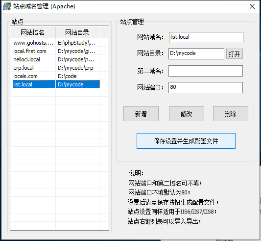
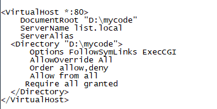
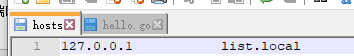
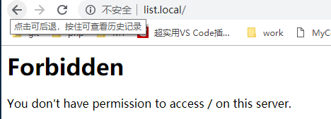
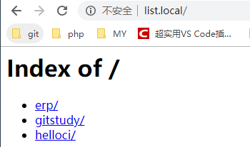
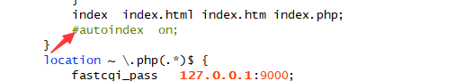

原文出处:本文由博客园博主musicw689提供。
原文连接:https://www.cnblogs.com/wangyingyao/p/10874089.html
原文连接:https://www.cnblogs.com/wangyingyao/p/10874089.html
小白视角具体步骤如下
在phpstudy的->其它选项菜单->phpstudy设置->允许目录列表
phpstudy->其他选项菜单->站点域名管理(新增并保存)

然后会在vhosts.conf中自动生成

然后设置hosts文件

重启phpstudy
访问站点

显然是无效的,并且报错
解决方法:在vhosts.conf中修改
Options FollowSymLinks ExecCGI
修改成
Options +Indexes +FollowSymLinks +ExecCGI
保存重启后访问

完美解决
如果你的环境为nginx则更简单
直接将vhosts.conf下

注释去掉,重启就好了
小白以小白角度第一次写博客,望关照